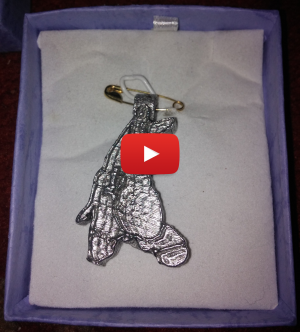

Pewter Casting with PLA
I discovered (by accident) a new way of doing Metal Casting.

I was having trouble with High Temperature Silicone Mould making kit. With some left over liquid pewter - I just poured it into a PLA mold and it did not just melt. With this in mind I experimented.... After some work I now have got this as a workable method for producing metal objects.
The video on the left walks you through the process - a longer video details each step in more detail.
Assuming you have a 3D-Printer (doesn’t everyone ?) , if you invest a few pounds for a ebay-toaster-oven and some lead-free pewter make you own metal objects. Anything from Christmas Broaches to lovely cufflinks. Other projects feature cufflinks - I just like them,